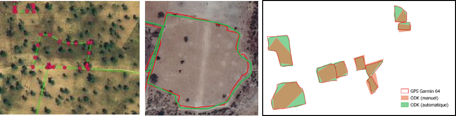
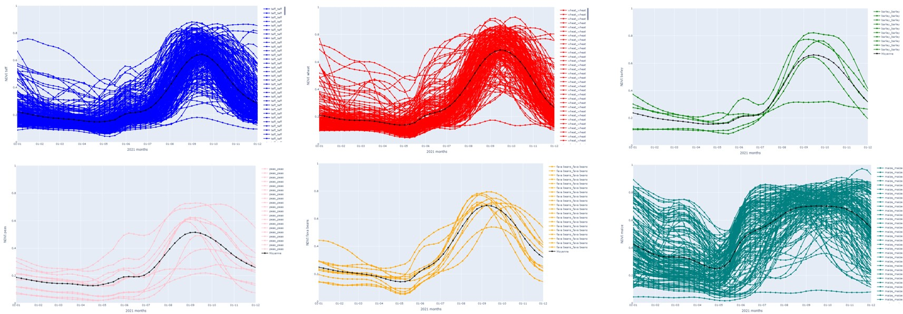

11 Remote Sensing in the Design of Sampling Frames
11.1 Outline
This chapter deals with the requirements of field surveys for statistical quality and for compatibility with EO data. Earth Observation (EO) are widely used in agricultural statistics production. However, the accuracy of EO-based land use classification is limited because of the limitations of using in situ census or survey data as training sets for EO applications. In this work, we provide recommendations for National Statistical Offices (NSO) to design in situ data collection campaigns that benefit both conventional statistics and EO-based assessments.
11.2 Matching in situ survey data to remote sensing analysis needs
Data collections done by NSOs can potentially become the main source of training data for EO applications for agricultural statistics. However, while national surveys often adopt GPS technology, satellite imagery remains largely unused by NSOs. To change this status quo, the Global Strategy to Improve Agricultural and Rural Statistics compiled various use cases in its Handbook on Remote Sensing for Agricultural Statistics, highlighting the missing links between EO-driven surveys and most common NSO surveys [1]. Experience shows that sampling design, response design, and quality control of NSO surveys must follow well-documented requirements to obtain statistically sound results when using EO data.
EO-related quality assurance of the in situ datasets developed in the FAO EOStat and ESA Sent4Stat projects includes two main components: (a) evaluation of survey design and (b) in situ data assessment using EO data. Quality assessment measures the suitability of a statistical survey (i.e. sampling and response design) to leverage satellite imagery in support of agriculture statistics. Many NSOs create their in situ protocols with a focus on aggregation at higher administrative tiers, often overlooking their potential application in EO contexts. Table 1 presents eleven criteria for NSOs to enable the combined use of in situ data for traditional surveys and EO applications.
| Criteria related to the sampling design | |
|
|
|
|
|
|
| Criteria related to the response design | |
|
|
|
|
|
|
|
|
|
11.3 EO-based quality control of in situ surveys
An integral aspect of the statistical survey process is its quality control procedure. Nationwide surveys require heavy logistics involving hundreds of enumerators dispersed across the country. In many countries, digital encoding devices have integrated GPS receivers and communication support, making near real-time quality checks feasible. In Senegal, the Direction de l’Analyse, de la Prévision et des Statistiques Agricoles (DAPSA) employs near real-time quality control to oversee national data collection, enabling the field campaign to incorporate repetition requests and corrections as needed.
Achieving the quality required for EO utilization imposes demands on the training of enumerators and presents more challenges for controllers. Besides being useful for aggregated surveys, in situ data must pass EO-based quality control checks. Such protocol is even more critical when combining datasets from distinct surveys requiring strict harmonisation. Experiences of FAO-EOSTAT and Sen2Stat with list frame and area frame statistical survey datasets led us to establish an EO-based quality control protocol. This protocol relies on existing maps and satellite time series processing as independent data quality control sources. Table 2 outlines the criteria applied for EO-based data quality control.
11.4 Technical suitability of in situ data
The first three criteria of the EO-based quality control concern the technical suitability of in situ data for EO applications. Typically, surveyors record GPS coordinates for household localization, crop observation placement, or field area measurement. Requirements for geospatial analysis include ensuring the topological soundness of spatial features, which involves verifying polygon closure, identifying duplicate points, and resolving polygon overlaps (Figure 11.1).
11.5 Measuring spatial precision of field plot boundaries
The last three criteria of the EO-based quality control rely on satellite imagery analysis. The spatial precision of field plot boundaries requires visual image interpretation of high spatial resolution imagery that aligns with the survey timeframe. This type of control usually involves overlaying the plotted polygons onto frequent data, such as monthly cloud-free surface reflectance base maps. Figure 11.2 shows a good-quality sample that aligns well with a cultivated field, whereas the second sample area covers multiple fields and some trees. The ideal situation is to use high-resolution images to visually check samples and plot boundaries and then classify the areas with lower spatial resolutions. A possible situation is to use 4.8-meter Planet monthly reflectance maps for sample quality control and 10-meter Sentinel-2 images for classification.
From an EO perspective, assessing sample quality requires time series from satellites such as Sentinel-2 for the growing season. Open-source platforms such as Sen4Stat and Sen2Agri toolbox [2] allow processing of all Sentinel-2 satellite images acquired along the season. One quantitative indicator of sample purity is the NDVI standard deviation (Figure 11.2, right plot) computed from the values of cloud-free satellite observations.

11.6 Using NDVI temporal profiles to assess crop phenology
The last EO-based requirement is the most difficult to address. We assume that crops of the same type, grown in the same agro-climatic zone, have similar planting and growing cycles. Analysing NDVI profiles across all crop samples strengthens crop label confidence. Atypical growth patterns (e.g., varied planting/cycle length or lack of growth) indicate potential mislabeling or mislocated samples. These samples need more scrutiny before they can be deemed usable.
Consider Ethiopia’s diverse crop cycles in Figure 11.3. Temporal profiles for barley, fava beans, and teff show outliers indicating marginal sample quality. The different NDVI profiles for maize samples reveal that a significant portion underwent a double cropping cycle within the observation period. Since the first crop cycle delayed planting, the sample population needs to be divided appropriately using clustering methods. The complexity of the wheat cropping cycle is heightened by sowing dates and varietal differences affecting cycle length. Thus, EO quality control aims to reject unsuitable samples for model calibration and output validation. Subsequent EO-derived results, like crop type maps, area estimates, and yield forecasts, critically depended on this quality control process.
knitr::include_graphics("./images//th_design_frames/QA_plot_Ethiopia.png")

11.7 Summary
In this chapter, we provide recommendations for National Statistical Offices (NSO) to design in situ data collection campaigns that benefit both conventional statistics and EO-based assessments. Following these guidelines will increase the accuracy of EO-based land use classification.
References{-}
[1]
J. Delincé et al., Handbook on remote sensing for agricultural statistics. FAO, 2017.
[2]
P. Defourny et al., “Near real-time agriculture monitoring at national scale at parcel resolution: Performance assessment of the Sen2-Agri automated system in various cropping systems around the world,” Remote Sensing of Environment, vol. 221, pp. 551–568, 2019, doi: 10.1016/j.rse.2018.11.007.